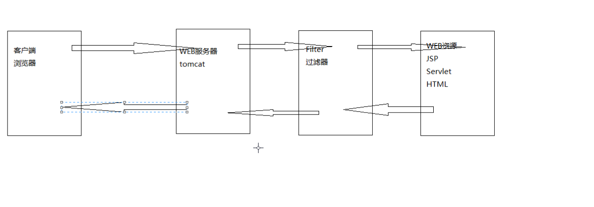

listener&filter
Filter的概述
Filter也称之为过滤器，Filter是Servlet技术中最激动人心的技术，
Filter可以管理WEB服务器中所有的WEB资源，
Filter可以对JSP，Servlet，HTML，以及图片文件等进行拦截和过滤，
Filter常用于实现一些特殊的功能，比如访问权限的控制，敏感词汇的过滤，乱码的处理等等，
FIlter其实就是一个特殊的Servlet，
Servlet API提供了Filter接口，在WEB项目中，一个Java类实现了Filter接口，那这个Java类他就是Filter过滤器，
Filter其实就是在用户访问目标资源之前，对请求和响应进行拦截过滤和处理。

Filter的入门案例
开发步骤
在WEB项目中创建一个Java类，
让该类实现Filter接口，
在该类中实现Filter接口的所有方法，
在web.xml文件中进行相关的配置
Filter的生命周期
创建
Filter对象在WEB服务器启动的时候，由WEB服务器帮我们创建
init()
销毁
Filter对象在WEB服务器关闭的时候销毁
destory()
Filter链
在同一个WEB应用中，可以开发编写多个Filter，那这多个Filter组成了一个链子，这个链子我们就称之为Filter链，WEB服务器在执行Filter链的时候，会根据Filter在web.xml文件中的配置顺序来执行。
获取FIlter的初始化参数
在web.xml文件中，可以通过
<init-param>标签来为Filter配置初始化参数，WEB服务器在创建Filter对象的时候，会调用Filter对象的init方法，并且将封装了FIlter初始化参数的FilterConfig对象传递进去，在Filter的init方法中，就可以通过FilterConfig对象来获取Filter的初始化参数。
1 | public void init(FilterConfig fConfig) throws ServletException { |
如果需要在其他方法中使用fConfig对象，需要定义一个成员变量，然后在init中this.fConfig = fConfig使用
统一全站字符编码
1 | @Override |
我们没有设置编码格式，结果肯定是一对乱码
1 | @Override |
现在我们设置了字符编码，页面正常显示，但我们如果有100个Servlet岂不是每一个都要手写一遍，问题没有得到很好的解决
1 | public void doFilter(ServletRequest request, ServletResponse response, FilterChain chain) throws IOException, ServletException { |
使用过滤器Filter设置字符编码，需要更改web.xml改成/*，映射到所有页面，这时页面可以显示正常，但控制台syso输出的还是乱码，需要进一步优化
1 | public class MyHttpServletRequset extends HttpServletRequestWrapper{ |
需要继承HttpServletRequestWrapper，并创建构建函数，重写getParameter（）方法，这样乱码就得到了完整的解决，但是，今后如果要改变字符编码，我们就得来修改源码，有很大的风险，我们应该提取字符编码格式出来。
1 | private String encoding; |
1 | private String encoding; |
1 | <param-name>encoding</param-name> |
获取xml中的初始化属性，然后赋给需要更改编码的地方，这样整个编码格式就改好了。
校验用户是否登录
登录页面
首页
注册页面
用户进入首页，可以选择登录或者访问重要的WEB资源，
如果没有登录是不可访问WEB资源的，提示用户需要登录才能访问。
1 | <c:choose> |
1 | public void doFilter(ServletRequest request, ServletResponse response, FilterChain chain) throws IOException, ServletException { |
注意，需要改变ImportantFilter的映射路径，不然整个页面将访问不到，应该为/important/*
点击登录页面后跳转到login.jsp进行登录，提交到相应的Servlet进行处理。
1 | <h1>登陆页面</h1> |
1 | @Override |
登录成功后，跳转至首页，显示注销连接，此时可以访问WEB资源。通过删除session中的user属性或者直接销毁整个session进行注销。
1 | @Override |
监听器的概述
是一个实现了特定接口的普通Java类，用于监听其他对象的方法执行和属性改变，被监听的对象如果发生了上述的事件，监听器的某个方法就会立刻执行。
作用：
监听(监视，观察)其他对象所发生的变化，主要用于图形化界面的程序员，比如Java的GUI，Android，IOS。
组成的元素
事件源
监听器
监听器绑定事件源
事件发生
事件处理
监听器入门案例
1 | public class MyFrame { |
自定义监听器
Student 事件源
eat();
sleep();
addStudentListener(StudentListener listener);
StudentListener 监听器
preEat();
PreSleep();
1 | public class Student { |
1 | public class StudentListener { |
1 | public class StudentTest { |
Servlet中的监听器
Servlet规范为我们提供了8个监听器。
- ServletContextListener
- HttpSessionListener
- ServletRequestListener
- ServletContextAttributeListener
- HttpSessionAttributeListener
- ServletRequsetAttributeListener
编写步骤：
创建一个普通的Java类
让该类实现监听器的接口
在该类中实现监听器接口的所有方法
在web.xml文件中通过<listener>标签来配置(注册)监听器
帮助JavaBean对象感知自己在session域对象中的状态- HttpSessionBindingListener
- HttpSessionActivationListener
这两个特殊的监听器不需要再web.xml文件中配置，让JavaBean实现这个两个接口就可以了
监听域对象的创建和销毁
- ServletContextListener
- HttpSessionListener
- ServletRequestListener
1 | public class MyServletContextListener implements ServletContextListener { |
1 | public class MyHttpSessionListener implements HttpSessionListener { |
监听域对象中属性的变化
- ServletContextAttributeListener
- HttpSessionAttributeListener
- ServletRequsetAttributeListener
1 | //监听Session域对象中属性的变化 |
JavaBean的感知监听器
1 | public class User implements Serializable,HttpSessionBindingListener,HttpSessionActivationListener{ |
统计在线用户数分析
计数器
可以吧计数器保存在ServletContext域对象当中
计数器的默认值是0
如果session域对象创建了，那我们认为用户在线了，计数器就需要+1
如果session域对象销毁了，那我们认为用户离线了，计数器就需要-1
在线
一个用户有了自己的session对象，我们就认为这个用户在线了。
离线
一个用户手动销毁自己的session对象，获取超时了，那我们就认为这个用户离线了
统计在线用户数
1 | public class OnlineServletContextListener implements ServletContextListener { |
1 | public class OnlineSessionListener implements HttpSessionListener { |